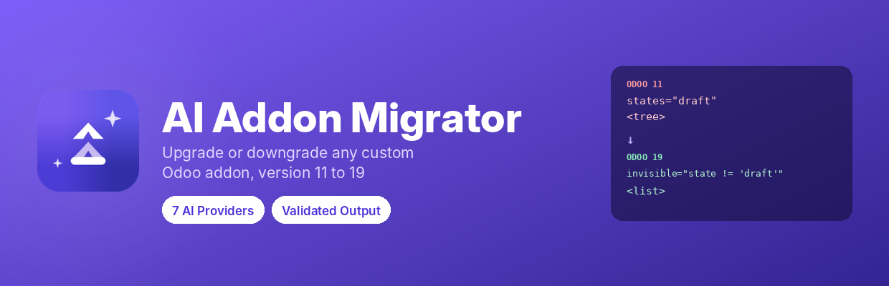
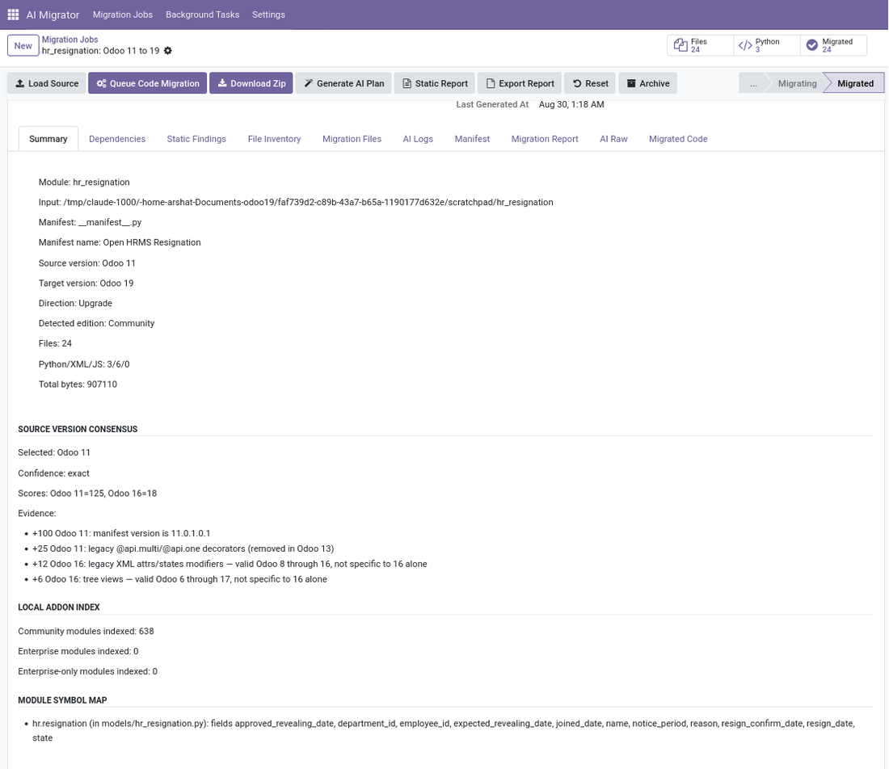
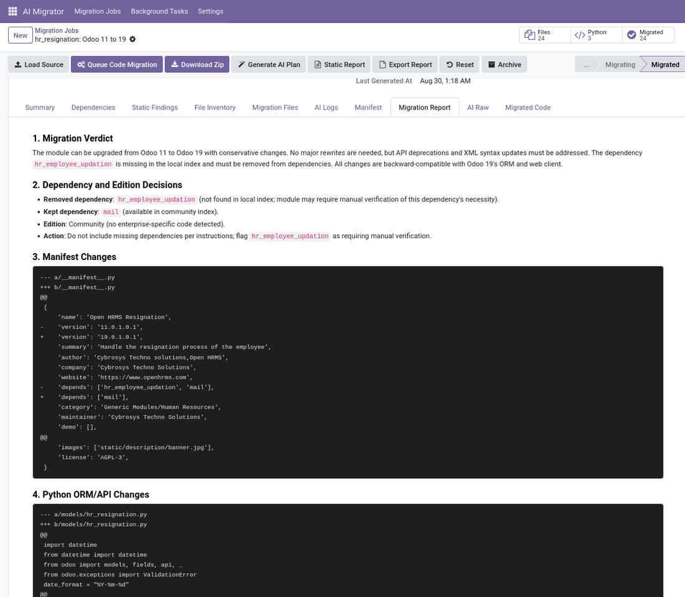
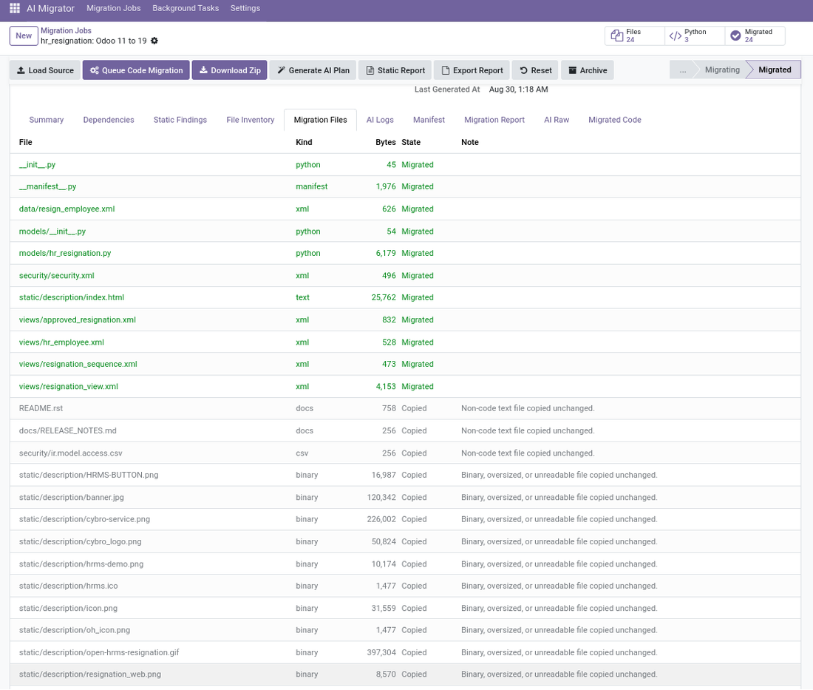
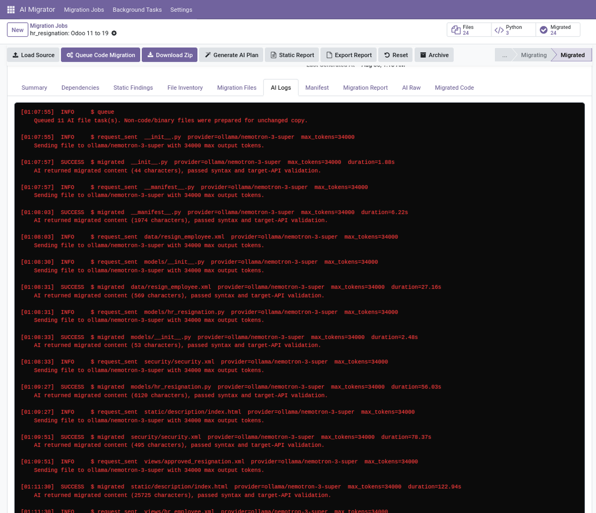
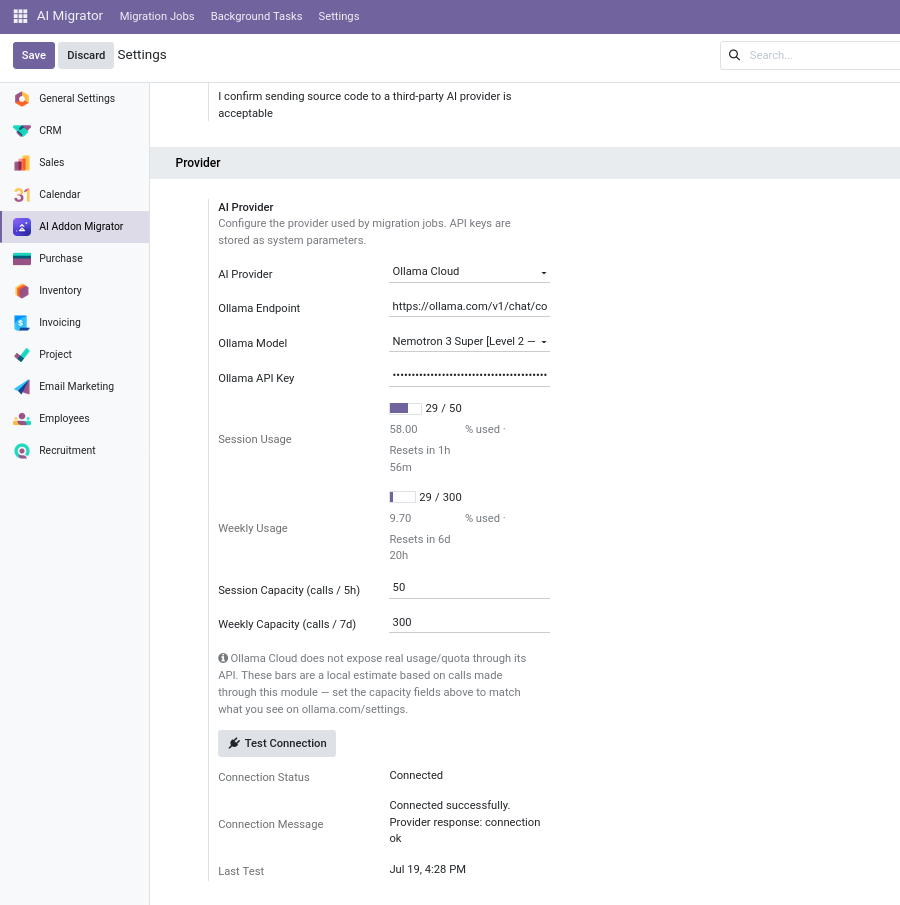
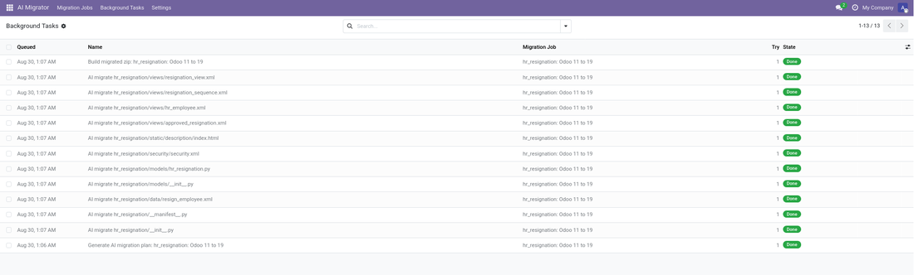

Migrate any custom Odoo module or addon between Odoo 11 and 19, in either direction, using the AI provider of your choice — with deterministic validation on every file the AI returns.

Point it at an addon — a server folder or an uploaded zip — choose the source and target versions, and get back a ready-to-install module. Every AI response is syntax-checked and scanned for leftover legacy code before it is trusted, so what you download is reviewable, not a black box.
|
11 → 19
Any version pair, either direction
|
7
AI providers, switchable per job
|
0
Extra modules to install
|
File by file
Validated and individually retried
|
From a real Odoo 11 to 19 run on a production HR addon. These are the constructs that silently break a module on install.
The detail that matters: a modifier must become a Python expression
(state != 'draft'),
not a leftover domain list. A domain list is always truthy, so the button would be hidden permanently. A dedicated check catches exactly this and sends the file back for correction.
Anything can pipe a file to an LLM. The work is in everything that happens around the call.
It does not take “no” for an answerWhen a model replies SKIP, refuses, or returns prose instead of code, the file is not quietly abandoned. It is re-asked with a firmer instruction, up to a configurable limit — and the original is always preserved. |
Validated, then re-validatedEvery migrated file is syntax-checked — Python AST, XML well-formedness, JS bracket balance — and repaired on failure, then scanned for legacy constructs the AI itself left behind. The same checks run whichever provider you use. |
Nothing silently disappearsMethods, classes, XML record ids and manifest depends/data are compared before and after. If something vanished, the file is flagged Needs Review. Valid syntax is never mistaken for correctness. |
Honest version detectionManifest metadata and code patterns are scored together to identify the source version, with a stated confidence level. When the evidence is thin it says so and asks you to confirm, instead of migrating from the wrong baseline. |
Its own background queueLong AI work runs as background tasks driven by a standard scheduled action — no external queue module, no server_wide_modules entry. Tasks retry with backoff, survive a restart, and are visible in their own menu. |
A complete audit trailA timestamped terminal log records every request, provider, model, token budget, retry and outcome per file — so you can see exactly why a file was migrated, flagged, or left alone. |
Five steps. You stay in control at every one of them.
1 |
Load the source Server folder or uploaded zip. The addon is scanned, its version detected and a static findings report produced — all before a single AI call. |
2 |
Decide on dependencies Each manifest dependency is classified against your own addon roots. You choose whether their source is sent as AI context — or not sent at all. |
3 |
Generate a plan (optional) A migration report, patch plan, file-by-file rewrite plan or compatibility review — produced in the background, so it never ties up your browser. |
4 |
Run the code migration Every file becomes its own background task: migrated, validated, retried on failure, checked for drift, and flagged when something looks off. Watch it progress live. |
5 |
Download and review A ready-to-install module zip, plus the Skipped and Needs Review lists — so you know precisely what to check by hand before trusting it in production. |
Configure one provider or several, switch per job, override the model, and test the connection before you commit to a run. Usage is billed by your provider, never through this app.
Everything happens inside Odoo — no external console, no command line.
|
 The migration job — source, versions, provider |
 The generated migration report |
|
 Per-file status: migrated, copied, needs review |
 The AI terminal — every request and outcome |

Provider configuration and the safety opt-in

The built-in background task queue
Stated plainly, so there are no surprises after install.
One configuration step. No extra modules are required — the background task queue is built in. Because AI calls can run for several minutes, add limit_time_real_cron = 3600 to the [options] section of odoo.conf and restart. Without it, Odoo's default 120-second limit on scheduled actions can interrupt a long migration.
On-premise / self-hosted onlyThis app reads and writes files on the Odoo server's own filesystem and calls external AI APIs. It is not compatible with sandboxed hosting such as Odoo Online. |
Your source code leaves your serverEvery migrated file is sent to the AI provider you configure. Settings requires an explicit, recorded confirmation before any call is made — nothing is ever sent silently. |
You bring your own API keyFor whichever providers you enable. Usage is billed by that provider, not by this app. Stored keys are encrypted at rest. |
Access is restricted by designOnly an explicit “Odoo Module Upgrade AI Manager” group may scan files or call a provider, and filesystem access is limited to addon roots you configure — never an unrestricted path. |
Every file accounted for, every decision logged, every uncertain result flagged rather than hidden.